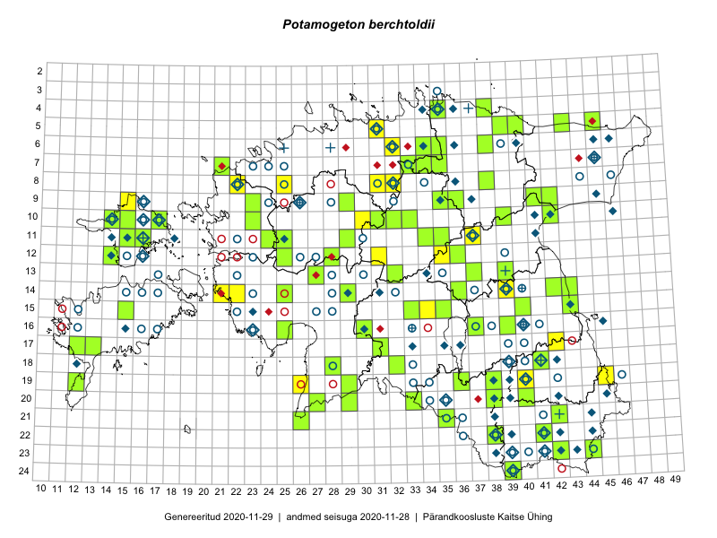

Potamogeton berchtoldii — muda-penikeel
Kaardile koondatud taksonid: Potamogeton berchtoldii Fieber (83)

Kaart põhineb 83 kirjel, neist:
vaatlusi 17
eksemplare 66
Kaasaegsed1 leiukohad asuvad 60 ruudus.
Andmed “Eesti taimede levikuatlasest”,2 sulgudes ruutude arv:3
● 1971–2005 (66)
○ 1921–1970 (53)
△ kuni 1920 (0)
+ hävinud (0)
? kaheldav (0)
Lisaruudud teistest andmebaasidest:4
ELF: 2006– . . . (0)
PKÜ: 2006– . . . (0)
ELF: 1971–2005 (0)
PKÜ: 1997–2005 (0)
| Ruut | Vaatleja(d) | Vaatlusaeg | Kirje PlutoFis |
|---|---|---|---|
| 19-45 | Tõnu Feldmann, Katrit Karus | 2015-07-27 | ruut/ala: Potamogeton berchtoldii Fieber |
| 05-31 | Katrit Karus, Tõnu Feldmann | 2015-08-04 | ruut/ala: Potamogeton berchtoldii Fieber |
| 15-34 | Maria Abakumova, Helle Mäemets | 2015-07-30 | ruut/ala: Potamogeton berchtoldii Fieber |
| 24-39 | Eeva-Maria Jeletsky, Tarmo Niitla | 2015-07-25 | ruut/ala: Potamogeton berchtoldii Fieber |
| 14-39 | Erkki Otsman, Sergei Smirnov | 2015-07-21 | ruut/ala: Potamogeton berchtoldii Fieber |
| 09-35 | Kadi Palmik, Helle Mäemets | 2015-07-21 | ruut/ala: Potamogeton berchtoldii Fieber |
| 11-25 | Hanna-Eliisa Luts, Tõnu Ploompuu | 2015-07-28 | ruut/ala: Potamogeton berchtoldii Fieber |
| 17-31 | Oliver Parrest, Timo Luhamäe | 2016-07-20 | ruut/ala: Potamogeton berchtoldii Fieber |
| 12-35 | Helle Mäemets, Kadi Palmik | 2017-07-14 | ruut/ala: Potamogeton berchtoldii Fieber |
| 10-30 | Indrek Tammekänd, Janno Tammekänd, Üllar Tammekänd, Andreas Tammekänd, Tene Johanson | 2016-08-20 | ruut/ala: Potamogeton berchtoldii Fieber |
| 08-31 | Helle Mäemets, Kadi Palmik | 2017-08-03 | ruut/ala: Potamogeton berchtoldii Fieber |
| 08-25 | Helle Mäemets, Kadi Palmik | 2017-07-14 | ruut/ala: Potamogeton berchtoldii Fieber |
| 17-42 | Kirsi Loide, Marje Loide | 2015-07-27 | ruut/ala: Potamogeton berchtoldii Fieber |
| 19-29 | Indrek Tammekänd, Eike Vunk | 2016-08-08 | punkt: Potamogeton berchtoldii Fieber |
| 19-26 | Indrek Tammekänd | 2016-06-29 | punkt: Potamogeton berchtoldii Fieber |
| 11-37 | Helle Mäemets | 2018-07-12 | punkt: Potamogeton berchtoldii Fieber |
| 11-37 | Helle Mäemets, Kadi Palmik | 2018-07-11 | ruut/ala: Potamogeton berchtoldii Fieber |
| 05-43 | Peedu Saar, Toomas Kukk | 2016-09-13 | TAA0134001: Potamogeton berchtoldii Fieber |
| 23-44 | Peedu Saar, Karin Kikas | 2016-08-19 | TAA0134003: Potamogeton berchtoldii Fieber |
| 11-15 | Peedu Saar, Maret Gerz | 2016-08-09 | TAA0134007: Potamogeton berchtoldii Fieber |
| 05-40 | Peedu Saar, Sander Laherand | 2016-07-28 | TAA0134014: Potamogeton berchtoldii Fieber |
| 11-35 | Peedu Saar, Timo Luhamäe | 2016-07-21 | TAA0134016: Potamogeton berchtoldii Fieber |
| 13-27 | Peedu Saar, Timo Luhamäe | 2016-07-08 | TAA0134017: Potamogeton berchtoldii Fieber |
| 20-40 | Peedu Saar, Tarmo Niitla | 2016-06-17 | TAA0134018: Potamogeton berchtoldii Fieber |
| 05-45 | Toomas Kukk, Tiit Hallikma | 2015-07-21 | TAA0134281: Potamogeton berchtoldii Fieber |
| 11-29 | Toomas Kukk, Tiit Hallikma | 2015-06-11 | TAA0134992: Potamogeton berchtoldii Fieber |
| 12-14 | Toomas Kukk, Meeli Mesipuu | 2016-08-10 | TAA0137052: Potamogeton berchtoldii Fieber |
| 05-39 | Toomas Kukk | 2013-08-22 | TAA0112206: Potamogeton berchtoldii Fieber |
| 05-39 | Toomas Kukk | 2013-08-22 | TAA0112205: Potamogeton berchtoldii Fieber |
| 10-15 | Sander Laherand, Nele Jõessar, Toomas Kukk | 2016-08-09 | TAA0135853: Potamogeton berchtoldii Fieber |
| 21-26 | Indrek Tammekänd, Sirje Azarov | 2016-07-18 | TAA0137625: Potamogeton berchtoldii Fieber |
| 19-29 | Indrek Tammekänd, Eike Vunk | 2016-08-08 | TAA0140001: Potamogeton berchtoldii Fieber |
| 14-29 | Toomas Kukk, Ilmar Uibopuu | 2017-08-11 | TAA0141609: Potamogeton berchtoldii Fieber |
| 14-29 | Toomas Kukk, Ilmar Uibopuu | 2017-08-11 | TAA0141610: Potamogeton berchtoldii Fieber |
| 11-25 | Toomas Kukk, Eerik Leibak | 2017-08-10 | TAA0141647: Potamogeton berchtoldii Fieber |
| 11-25 | Toomas Kukk, Eerik Leibak | 2017-08-10 | TAA0141648: Potamogeton berchtoldii Fieber |
| 11-25 | Toomas Kukk, Eerik Leibak | 2017-08-10 | TAAdupl0141648: Potamogeton berchtoldii Fieber |
| 11-25 | Toomas Kukk, Eerik Leibak | 2017-08-10 | TAAdupl0141648_2: Potamogeton berchtoldii Fieber |
| 11-25 | Toomas Kukk, Eerik Leibak | 2017-08-10 | TAA0141649: Potamogeton berchtoldii Fieber |
| 10-17 | Peedu Saar, Ott Luuk | 2017-09-11 | TAA0141032: Potamogeton berchtoldii Fieber |
| 15-43 | Peedu Saar, Ott Luuk | 2017-08-21 | TAA0141037: Potamogeton berchtoldii Fieber |
| 20-38 | Peedu Saar, Ott Luuk | 2017-07-25 | TAA0141049: Potamogeton berchtoldii Fieber |
| 20-38 | Peedu Saar, Ott Luuk | 2017-07-25 | TAA0141050: Potamogeton berchtoldii Fieber |
| 06-35 | Peedu Saar, Ott Luuk | 2017-07-19 | TAA0141054: Potamogeton berchtoldii Fieber |
| 08-38 | Peedu Saar, Ott Luuk | 2017-07-18 | TAA0141055: Potamogeton berchtoldii Fieber |
| 08-38 | Peedu Saar, Ott Luuk | 2017-07-18 | TAA0141056: Potamogeton berchtoldii Fieber |
| 14-42 | Ott Luuk, Peedu Saar | 2015-06-21 | TAA0142520: Potamogeton berchtoldii Fieber |
| 17-31 | Toomas Kukk | 2017-08-29 | TAA0141834: Potamogeton berchtoldii Fieber |
| 09-35 | Toomas Kukk, Peedu Saar | 2017-09-27 | TAA0141942: Potamogeton berchtoldii Fieber |
| 04-38 | Toomas Kukk, Peedu Saar | 2017-09-28 | TAA0141947: Potamogeton berchtoldii Fieber |
| 18-29 | Indrek Tammekänd | 2017-08-07 | TAA0143425: Potamogeton berchtoldii Fieber |
| 14-43 | Ott Luuk, Peedu Saar | 2017-08-21 | TAA0142800: Potamogeton berchtoldii Fieber |
| 10-14 | Ott Luuk, Peedu Saar | 2017-09-14 | TAA0142824: Potamogeton berchtoldii Fieber |
| 10-14 | Ott Luuk, Peedu Saar | 2017-09-14 | TAA0142825: Potamogeton berchtoldii Fieber |
| 18-28 | Ott Luuk | 2017-08-29 | TAA0142877: Potamogeton berchtoldii Fieber |
| 18-28 | Ott Luuk | 2017-08-29 | TAA0142878: Potamogeton berchtoldii Fieber |
| 20-27 | Aat Sarv, Eerik Leibak | 2016-07-19 | TAA0145423: Potamogeton berchtoldii Fieber |
| 09-42 | Ott Luuk, Eerik Leibak | 2016-08-05 | TAA0145574: Potamogeton berchtoldii Fieber |
| 20-33 | Peedu Saar | 2018-08-03 | TAA0146873: Potamogeton berchtoldii Fieber |
| 22-42 | Toomas Kukk | 2018-07-18 | TAA0146525: Potamogeton berchtoldii Fieber |
| 06-38 | Gerda Ratasepp | 2008-08-07 | TAA2002924: Potamogeton berchtoldii Fieber |
| 10-42 | Helle Mäemets | 2006-09-21 | TAA2002968: Potamogeton berchtoldii Fieber |
| 11-35 | Timo Luhamäe, Peedu Saar | 2016-07-21 | TAA0145302: Potamogeton berchtoldii Fieber |
| 11-35 | Timo Luhamäe, Peedu Saar | 2016-07-21 | TAA0145303: Potamogeton berchtoldii Fieber |
| 12-28 | Indrek Tammekänd | 2018-08-02 | TAA0147810: Potamogeton berchtoldii Fieber |
| 13-27 | Indrek Tammekänd | 2018-08-02 | TAA0147811: Potamogeton berchtoldii Fieber |
| 14-25 | Indrek Tammekänd | 2018-07-30 | TAA0147830: Potamogeton berchtoldii Fieber |
| 18-28 | Toivo Sepp, Liina Oja | 2016-07-19 | TAA0147853: Potamogeton berchtoldii Fieber |
| 10-39 | Toomas Kukk, Thea Kull | 2019-09-10 | TAA0148543: Potamogeton berchtoldii Fieber |
| 10-39 | Toomas Kukk, Thea Kull | 2019-09-10 | TAA0148544: Potamogeton berchtoldii Fieber |
| 10-39 | Toomas Kukk, Thea Kull | 2019-09-10 | TAA0148544dupl1: Potamogeton berchtoldii Fieber |
| 10-39 | Toomas Kukk, Thea Kull | 2019-09-10 | TAA0148544dupl2: Potamogeton berchtoldii Fieber |
| 19-38 | Thea Kull | 2019-07-11 | TAA0147916: Potamogeton berchtoldii Fieber |
| 18-41 | Peedu Saar, Ott Luuk | 2019-09-24 | TAA0149502: Potamogeton berchtoldii Fieber |
| 09-41 | Peedu Saar, Timo Luhamäe | 2019-09-10 | TAA0149507: Potamogeton berchtoldii Fieber |
| 16-30 | Peedu Saar, Toomas Kukk, Martin Tikk | 2019-08-28 | TAA0149512: Potamogeton berchtoldii Fieber |
| 07-21 | Peedu Saar | 2019-08-15 | TAA0149513: Potamogeton berchtoldii Fieber |
| 19-36 | Peedu Saar, Ott Luuk | 2019-07-16 | TAA0149519: Potamogeton berchtoldii Fieber |
| 15-40 | Peedu Saar, Ott Luuk | 2019-07-04 | TAA0149533: Potamogeton berchtoldii Fieber |
| 15-40 | Peedu Saar, Ott Luuk | 2019-07-04 | TAA0149534: Potamogeton berchtoldii Fieber |
| 16-25 | Indrek Tammekänd | 2019-08-11 | TAA0151757: Potamogeton berchtoldii Fieber |
| 12-36 | Indrek Tammekänd | 2019-07-24 | TAA0151760: Potamogeton berchtoldii Fieber |
| 07-28 | Timo Luhamäe, Peedu Saar | 2017-08-08 | TAA0152092: Potamogeton berchtoldii Fieber |
Kaasaegsed leiukohad (tähistatud värvitud ruutudega) põhinevad peamiselt 2014–2019 välitööandmetel. Väiksemal määral on andmebaasi kantud vanemaid leiuandmeid aastatest 2006–2013.↩︎
Kukk, T., Kull, T., Eesti taimede levikuatlas. Eesti Maaülikool, Põllumajandus- ja Keskkonnainstituut, Tartu, 2005.↩︎
NB! 2005. aasta atlase andmestikus katavad uuemad leiud vanemaid. Näiteks kui liik on ruudus registreeritud 1971–2005, siis pole võimalik öelda, kas ta oli sellest ruudust teada ka enne 1970. aastat. Vana atlase andmetel hävinud ja kaheldavaid leiukohti pole hilisemate (taas)leidude põhjal korrigeeritud.↩︎
Eestimaa Looduse Fondi (ELF) ja Pärandkoosluste Kaitse Ühingu (PKÜ) andmebaasid sisaldavad inventeeritud koosluste kirjeldusi ja liigiloendeid. Neist andmekogudest on kaardile lisatud lisatud vaid need ruudud, millest uue atlase andmekogus taksoni kohta kirjeid veel pole. Kõrvale on jäetud teadaolevalt kaheldavad määrangud. Kaartidel katavad uuema perioodi andmed vanemaid, PKÜ omad ELFi omi. Kattumise tõttu võib kaardil näha olla vähem mingi kategooria ruute kui legendis olev arv näitab. ELFi ja PKÜ andmed ei kajastu hetkel vaatluste tabelis ega ruutude liigiloendites.↩︎